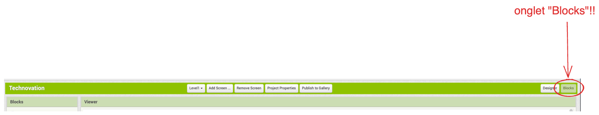

Finissons l'application!
Bravo! l'application avance!
Je vous ai fait une base de l'application pour vous éviter les parties les plus difficiles, mais à vous de donner à l'application toute la personnalité possible!!!
Ce guide est à suivre avec au moins un de vos parents, et devrait prendre à peu près 20-40 minutes!
Vous devrez vous mettre d'accord pour vous connecter sur l'application à des moments dans la semaine, car vous ne pouvez pas être plus qu'une connexion à la fois.
Je vous recommande d'écrire dans le channel du Nectir à quelle journée vous allez vous connecter. Par exemple, Sophia peut dire "Salut, je me connecte le Lundi à 18h", et Chloe peut dire "salut je me connecte le jeudi à 20h", et ainsi de suite!
Numéros de niveaux assignés:
Laura fait niveau 1
Sophia fait niveau 2
Maï-Lan fait niveau 3
Chloe fait niveau 4
Comment travailler sur le projet
Suffit d'abord de savoir comment utiliser appInventor. Si vous n'êtes pas familière, prenez un 10-15 minutes additionnel pour suivre ce tutoriel, soit en français ou en anglais!
Tutoriel appInventor en anglais
Tutoriel AppInventor en français
(À noter, le tutoriel est assez vieux, donc certaines choses qui sont dites comme "il n'est pas disponible pour être testé sur des app iOS", ne sont plus vraies!)
VRAIMENT important à savoir!!!!
Quand vous voulez tester l'app sur votre cellulaire, assurez-vous d'aller sur l'onglet "Screen1" avant de l'ouvrir dans votre téléphone, car sinon elle peut sembler brisée!!
Ce qui reste à faire: Ajouter des nouveaux types de déchets!!!
En ce moment, nous n'avons pas beaucoup de types de déchets! Nous avons seulement:
une Pomme ("apple"), qui va dans le compost et qui vaut 3 points quand on la met à la bonne place

une boîte ("box"), qui va dans le recyclage et qui vaut 1 point quand on la met à la bonne place
Mais nous en voulons beaucoup plus de types de déchets!!! Donc, c'est à vous d'en ajouter de différents types selon vos niveaux!
Je vous recommande d'avoir au moins 5 déchets d'ajoutés, mais vous pouvez en rajouter autant que vous voulez!
Étapes pour ajouter des nouveaux types de déchets (note: on répète les étapes pour chaque nouvel déchet qu'on ajoute)
1. Se demander quel déchet on veut ajouter:
Quel est le déchet? Par exemple, une pointe de pizza? un bonbon? un emballage de bonbon vide?
Dans quel bac va le déchet? Récyclage? Poubelle ou bac de compost?
Combien de points va-t-on donner à l'utilisateur si il ou elle le met à la bonne place? 1 point? 3 points? 5 points? etc.
Exemple: je choisis une Pizza, qui va dans le compost, et qui va valoir 1 point
2. Trouver une photo ou un dessin du déchet
On peut en trouver une photo sur google, ou faire un dessin et en prendre une photo!
Moi, je cherche souvent le nom du déchet suivi du mot "clip art", ce qui me donne des images qui ont l'air d'un dessin!
Exemple: (toujours avec mon exemple de pizza) j'ai cherché "pizza slice clip art" sur google images!
et je prends la 2e photo

Optionnel: si je veux enlever le fond blanc, je peux aller sur la page web http://remove.bg
je téléverse mon image et je clique sur le bouton bleu "download"
Mon image n'a plus de fond blanc maintenant!
3. On s'assure que notre photo du déchet soit nommée quelque chose de très clair!!!
AppInventor ne nous laisse pas renommer des images par la suite, donc il faut s'assurer de bien nommer l'image avant de la téléverser sur appInventor.
Moi, je vais nommer mon image de la pizza "pizzaSlice". Donc, le fichier s'appelle "pizzaslice.png"
4. On téleverse l'image sur appInventor
4.1 On s'assure d'être dans l'onglet (tab) Blocks de appInventor. Toutes nos étapes se feront dans cet onglet!!!

4.2 On descend vers le bas de la page, et à gauche se trouve la section "Media". Trouver le bouton "Upload file" et cliquer dessus pour téléverser votre image:
J'ai mis mon image "pizzaslice.png" de l'étape 3.
Cliquez sur "ok" pour confirmer!
Votre image se trouvera complètement en dernière dans la liste:
5. Aller dans l'onglet de votre niveau
Vous devez avoir indiqué sur Nectir quel niveau vous allez faire! Par exemple, si vous avez indiqué que vous allez faire Niveau 2, allez sur l'onglet Level2
Si vous faites le niveau 3, vous allez sur l'onglet Level3, et Level4 si vous faites le niveau 4.
6. Trouver les blocs dans lesquels l'on va travailler
Une fois que vous êtes dans le bon onglet, dirigez vous vers les 4 gros blocs que l'on voit dans la page:
Vous pouvez toujours utiliser les boutons + et - à droite pour le zoom si c'est jamais trop petit ou trop grand!
7. Trouvez le bloc assignedImagesToItems:
Cliquez sur le petit bouton "gear" 
Glissez un nouveau bloc "Pair" en dessous des blocs "Pairs" courants:
Sélectionnez le bloc qui vient d'apparaître, faites un clic droit avec la souris, et cliquez sur "delete block"
Cliquez sur le bloc juste en haut et cliquez sur "Duplicate"
et connectez le nouvel bloc dans le petit trou:
Vous allez maintenant changer le nom de votre nouvel objet dans le rectangle rose et indiquer le nom de l'image dans le rectangle orange
Ce qui, pour ma pizza, me donne ceci
8. Trouvez le bloc assignedPointsToItems:
Suivez les mêmes instructions qu'à l'étape 7 (mais avec le bloc assignedPointsToItems) , mais cette fois-ci nous sommes en train d'ajouter un numéro de points à notre objet. Dans mon cas à moi, j'ajoute 5 points à ma pizza:
Ce qui veut dire qu'à chaque fois que je mets la pizza à la bonne poubelle, on gagne 5 points!
9. Trouvez le bloc assignedTypesToItems
Suivez les mêmes étapes qu'à l'étape 7 (mais avec le bloc assignedTypesToItems), mais cette-fois si nous sommes en train de dire dans quel est le type de la poubelle dans laquelle l'item devrait aller.
Nous avons trois types de poubelles que vous pouvez donner à chacun de vos déchets:
recyclingtrashcompost
!!!Attention!!! Assurez-vous d'écrire le type correctement, exactement comme il est écrit ci-haut!!!! Si ce n'est pas bien écrit, ça se peut que ça ne marche pas.
Pour ma pizza, je lui mets un type "compost":
10. Trouvez le bloc levelTimesInSecondsByLevelNumber
Dans ce bloc-ci, on va procéder de manière différente aux autres blocs. On va regarder quelle est la rangée qui correspond à mon numéro de niveau, et on va modifier la deuxième colonne de cette rangée. Dans l'image ci-dessous, j'ai encerclé les colonnes en rouge qui répresentent le niveau, et en vert qui représentent la durée en secondes.
Dans mon cas à moi, comme je fais le niveau 1, je vais modifier la 2è colonne de la la rangée qui a le numéro de niveau 1. Je vais lui mettre une durée de 75 secondes.
11. Répétez les étapes 1 à 9 pour les 4 autres items!!
Vous devriez rajouter 5 items différents!
Notez que l'étape 10 on doit juste la faire une fois :)